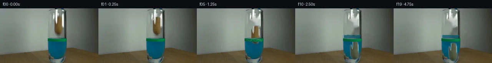

![首帧]()

Round 00
2026-11-05T06:17:47.620878+00:00像素候选变化代码 +250/−0inspection 更新
pixels 78302a59bd14a141 · code e459147d50c7cccb
查看本轮 generate.py 真实 diff
--- previous/generate.py
+++ current/generate.py
@@ -0,0 +1,250 @@
+#!/usr/bin/env python3
+"""Generate the 20-frame potato release using only first_frame.png pixels.
+
+The animation is deterministic. The potato is segmented from its color in the
+known glass ROI, the exposed background is reconstructed by local inpainting,
+and the source pixels are transformed along an analytic fall/sink trajectory.
+"""
+
+from pathlib import Path
+
+import cv2
+import numpy as np
+from PIL import Image, ImageDraw
+
+from artifact_io import save
+
+
+ROOT = Path(__file__).resolve().parent
+W, H = 256, 144
+
+
+def largest_component(mask: np.ndarray) -> np.ndarray:
+ count, labels, stats, _ = cv2.connectedComponentsWithStats(
+ mask.astype(np.uint8), connectivity=8
+ )
+ if count < 2:
+ raise RuntimeError("potato segmentation did not find a foreground component")
+ index = 1 + int(np.argmax(stats[1:, cv2.CC_STAT_AREA]))
+ return (labels == index).astype(np.uint8)
+
+
+def alpha_over(dst: np.ndarray, src: np.ndarray, alpha: np.ndarray) -> np.ndarray:
+ a = np.clip(alpha, 0.0, 1.0)[..., None]
+ return np.clip(dst.astype(np.float32) * (1.0 - a) + src.astype(np.float32) * a, 0, 255)
+
+
+def water_extension(base: np.ndarray, level: int, phase: float) -> tuple[np.ndarray, np.ndarray]:
+ """Return a source-derived blue layer above the original marked level."""
+ layer = np.zeros_like(base, dtype=np.float32)
+ alpha = np.zeros((H, W), dtype=np.float32)
+ if level >= 78:
+ return layer, alpha
+
+ # Repeat a real water row, retaining the source glass's horizontal lighting.
+ sample = base[92].astype(np.float32)
+ for y in range(level, 78):
+ left = 126 + (1 if y < 72 else 0)
+ right = 172 - (1 if y < 72 else 0)
+ yy = y - level
+ shimmer = 2.0 * np.sin(np.arange(W) * 0.31 + phase + yy * 0.45)
+ row = sample.copy()
+ row[:, 0] = np.clip(row[:, 0] * 0.72, 0, 255)
+ row[:, 1] = np.clip(row[:, 1] * 0.96 + shimmer, 0, 255)
+ row[:, 2] = np.clip(row[:, 2] * 1.02 + shimmer, 0, 255)
+ # Mix with the real empty-glass row to preserve reflections.
+ layer[y, left:right] = 0.78 * row[left:right] + 0.22 * base[y, left:right]
+ alpha[y, left:right] = 0.92
+ return layer, alpha
+
+
+def render_surface_and_splash(frame: np.ndarray, t: int, level: int) -> np.ndarray:
+ """Draw small anti-aliased water response, restricted to the glass interior."""
+ overlay = frame.copy().astype(np.uint8)
+ mask = np.zeros((H, W), dtype=np.uint8)
+ color_bright = (116, 142, 40) # BGR for cv2: pale cyan-green highlight
+ color_dark = (95, 76, 0) # BGR: dark blue-green trough
+
+ # Damped surface wave. It is strongest at entry and nearly flat at the end.
+ if t >= 4:
+ impact = {4: 0.3, 5: 0.8, 6: 1.0, 7: 0.78, 8: 0.56, 9: 0.42,
+ 10: 0.34, 11: 0.27, 12: 0.22, 13: 0.18, 14: 0.14,
+ 15: 0.11, 16: 0.08, 17: 0.055, 18: 0.035, 19: 0.02}.get(t, 0.0)
+ xs = np.arange(128, 171)
+ amp = 2.6 * impact
+ ys = level + np.rint(amp * np.sin((xs - 128) * 0.43 + t * 0.72)).astype(int)
+ pts = np.column_stack((xs, ys)).astype(np.int32).reshape(-1, 1, 2)
+ cv2.polylines(overlay, [pts], False, color_bright, 1, cv2.LINE_AA)
+ cv2.polylines(mask, [pts], False, 205, 1, cv2.LINE_AA)
+ if impact > 0.25:
+ pts2 = pts.copy()
+ pts2[:, 0, 1] += 2
+ cv2.polylines(overlay, [pts2], False, color_dark, 1, cv2.LINE_AA)
+ cv2.polylines(mask, [pts2], False, 105, 1, cv2.LINE_AA)
+
+ # Compact splash crown at impact; it rises only within the glass opening.
+ strength = {5: 0.62, 6: 1.0, 7: 0.72, 8: 0.38, 9: 0.16}.get(t, 0.0)
+ if strength:
… diff truncated; 163 more lines …